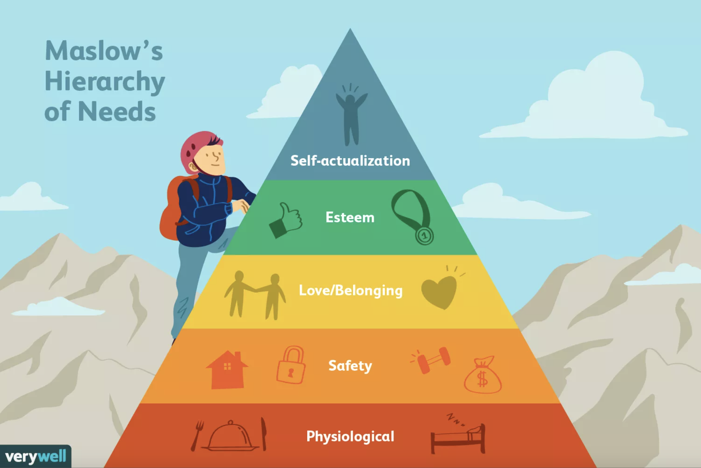

According to Kendra Cherry motivation is the process that initiates, guides, and maintains goal-oriented behaviors. It causes several kinds of human actions. In daily language we usually refer to motivation as a term that describes why someone does something as a force behind human actions. However, it is not the whole truth, it does not only refer to the factors necessary for activating behaviors, it also means the ones that direct and maintain the goal-oriented acting. Psychologists tried to come up with ideas about what actually lies behind the motivations for why we act? One of the most proven ones is Maslow’s hierarchy of needs.
According to Maslow, humans are inherently motivated to better themselves and move toward expressing their full potential—self-actualization—by progressively encountering and satisfying several levels of need from the most fundamental, such as for food and safety, to higher-order needs for love, belonging, and self-esteem. (psychologytoday.com)
The two main types of motivation are extrinsic and intrinsic.
Extrinsic motivations: outside of the individual, most of the times involve rewards like money, trophies, social recognition or praise.
Intrinsic motivations: they are within the individual, like doing a complicated puzzle for the pure personal gratification of solving the problem.
However, Serenity Creations Online widens the palette with two more types from a darker perspective.
Addiction: when one likes something really much he/she can even feel driven to do it or with common words get addicted to id. It states that motivation can have negative effects as well. If we resist as a result we can even feel pain mentally or physically.
Subconscious motivations: one may not know “why he/she does it” or “how that could happen” when he/she find him/herself in trouble again. For example: someone who pushes others away may have a part of themselves that sabotages opportunities for intimacy in order to protect from abandonment.
But after all, motivation is the most important key component for reaching goals. Working towards a goal involves several steps. First the individual think about what he/she wants to change and what is the reason behind setting the goal. It is recommended to divide the overarching goal into a series of small, specific, measurable tasks. This way the overall achieving of the goal becomes easier, because it is always easier to reach smaller ones and keep track as well. Also it is important to work ones way up from easier to harder tasks, otherwise the person will feel exhausted already in the beginning of the process and can become bored easily.
Dan Pink researched motivation for several years and gave a TED talk about it (my notes below)
Candle problem (created in 1945 by a psychologist, Karl Duncker): the individual has to attach a candle to the wall so the wax doesn’t drip onto the table. The experimentee gets a candle, some thumbtacks and some matches. A lot of people usually come up with a lot of bright ideas but none of them work. The key is to overcome functional fixedness. The box is not only the holder of the items you got but also could function as a platform for a candle.
Sam Glucksberg a Princeton scientist did the experiment with university students. Two groups: for one he didn’t offer rewards, for the other he did. The ones who were doing it for money had an average 3.5 minutes more on the timer. The answer is strange because it goes against market laws but when people get an incentive (this case: money), it will dull thinking and block creativity.
Glucksberg did another experiment but now he put the box next to the items as a tool, now the incentive ones were the faster. It showed that rewards only affect badly if creative thinking is needed. So, rewards work well for tasks with a simple set of rules and a clear destination, because they narrow our focus and restrict our possibility.
MIT students made a test as well with several type of tasks, when they involved only mechanical skills the more money were offered the better they performed but once the task would need rudimentary cognitive skill, the larger reward led to poor performance. They did another experiment with 3 levels of reward, the people with the highest offered did the worst. They moved the experiment to poorer countries as well if it’s about the life state of a person and it wasn’t, they showed the same results.
Dan thinks businesses should change to a new approach that scientists are already given to us with three elements: autonomy (urge to direct our own lives), mastery (desire to get better) and purpose (the yearning to do what we do in the service of something larger than ourselves). These are the building blocks for a new system. A lot of company started to use these part-time (like Google) or full-time (like Atlassian, an Australian software company).
Conclusion of Dan: Those 20th century rewards, those motivators we think are a natural part of business, do work, but only in a surprisingly narrow band of circumstances. Those 20th century rewards, those motivators we think are a natural part of business, do work, but only in a surprisingly narrow band of circumstances. If we bring our motivation, notions of motivation into the 21st century, if we get past this lazy, dangerous, ideology of carrots and sticks, we can strengthen our businesses, we can solve a lot of those candle problems, and maybe, maybe -- we can change the world.